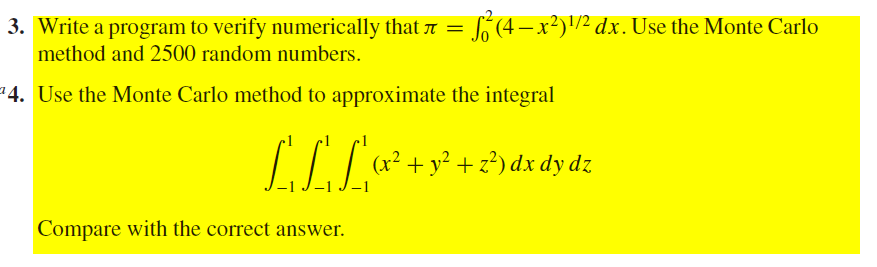
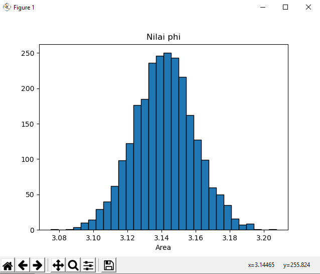
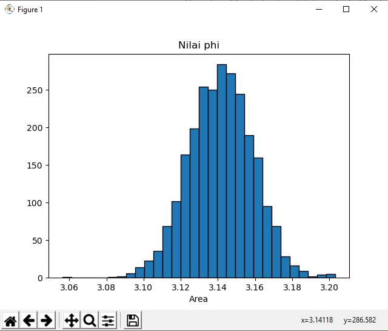
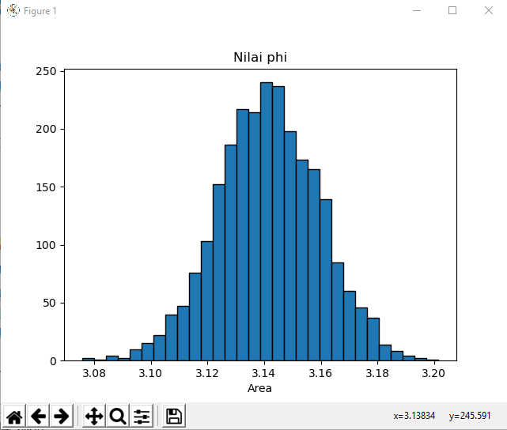
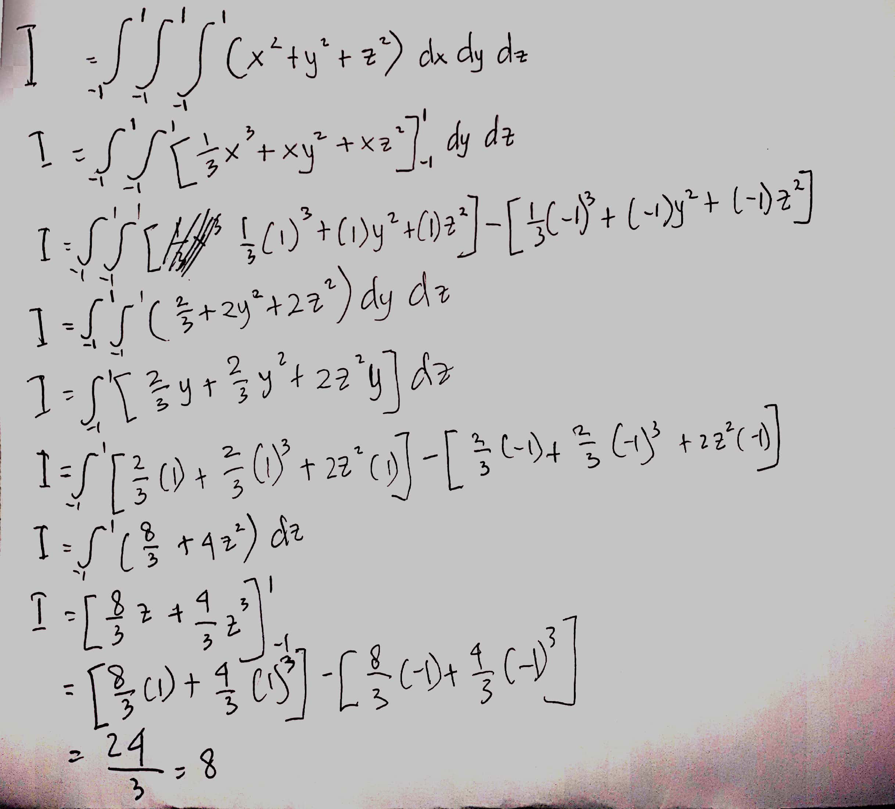

Tugas 7
Tugas 7¶
Metode Monte Carlo (Monte Carlo Method)¶
Metode Monte Carlo adalah algoritma komputasi untuk mensimulasikan berbagai perilaku sistem fisika dan matematika. Penggunaan klasik metode ini adalah untuk mengevaluasi integral definit, terutama integral multidimensi dengan syarat dan batasan yang rumit.
Metode Monte Carlo sangat penting dalam fisika komputasi dan bidang terapan lainnya, dan memiliki aplikasi yang beragam mulai dari perhitungan kromodinamika kuantum esoterik hingga perancangan aerodinamika. Metode ini terbukti efisien dalam memecahkan persamaan diferensial integral medan radians, sehingga metode ini digunakan dalam perhitungan iluminasi global yang menghasilkan gambar-gambar fotorealistik model tiga dimensi, dimana diterapkan dalam video games, arsitektur, perancangan, film yang dihasilkan oleh komputer, efek-efek khusus dalam film, bisnis, ekonomi, dan bidang lainnya.
Karena algoritme ini memerlukan pengulangan (repetisi) dan perhitungan yang amat kompleks, metode Monte Carlo pada umumnya dilakukan menggunakan komputer, dan memakai berbagai teknik simulasi komputer.
Algoritme Monte Carlo adalah metode Monte Carlo numerik yang digunakan untuk menemukan solusi problem matematis (yang dapat terdiri dari banyak variabel) yang susah dipecahkan, misalnya dengan kalkulus integral, atau metode numerik lainnya.
Metode Monte Carlo digunakan dengan istilah sampling statistik. Penggunaan nama Monte Carlo, yang dipopulerkan oleh para pioner bidang tersebut (termasuk Stanislaw Marcin Ulam, Enrico Fermi, John von Neumann dan Nicholas Metropolis, merupakan nama kasino terkemuka di Monako. Penggunaan keacakan dan sifat pengulangan proses mirip dengan aktivitas yang dilakukan pada sebuah kasino. Dalam autobiografinya Adventures of a Mathematician, Stanislaw Marcin Ulam menyatakan bahwa metode tersebut dinamakan untuk menghormati pamannya yang seorang penjudi, atas saran Metropolis.
Penggunaannya yang cukup dikenal adalah oleh Enrico Fermi pada tahun 1930, ketika ia menggunakan metode acak untuk menghitung sifat-sifat neutron yang waktu itu baru saja ditemukan. Metode Monte Carlo merupakan simulasi inti yang digunakan dalam Manhattan Project, meski waktu itu masih menggunakan oleh peralatan komputasi yang sangat sederhana. Sejak digunakannya komputer elektronik pada tahun 1945, Monte Carlo mulai dipelajari secara mendalam. Pada tahun 1950-an, metode ini digunakan di Laboratorium Nasional Los Alamos untuk penelitian awal pengembangan bom hidrogen, dan kemudian sangat populer dalam bidang fisika dan riset operasi. *Rand Corporation]]*an Angkatan Udara AS merupakan dua institusi utama yang bertanggung jawab dalam pendanaan dan penyebaran informasi mengenai Monte Carlo waktu itu, dan mereka mulai menemukan aplikasinya dalam berbagai bidang.
Penggunaan metode Monte Carlo memerlukan sejumlah besar bilangan acak, dan hal tersebut semakin mudah dengan perkembangan pembangkit bilangan pseudoacak, yang jauh lebih cepat dan praktis dibandingkan dengan metode sebelumnya yang menggunakan tabel bilangan acak untuk sampling statistik.
Soal¶

Listing Program 1 No 3¶
from scipy import random
import numpy as np
import matplotlib.pyplot as plt
a = 0
b = 2
N = 2500
#function for integral
def func(x):
return (4-x**2)**0.5
area = []
for i in range(N):
xrand = np.zeros(N)
for i in range(len(xrand)):
xrand[i] = random.uniform(a,b)
integral = 0.0
for i in range(N):
integral+=func(xrand[i])
jawab = (b-a)/float(N)*integral
area.append(jawab)
plt.title("Nilai phi")
plt.hist(area,bins = 30, ec = 'black')
plt.xlabel("Area")
plt.show()
Percobaan pertama

Pada percobaan pertama Nilai Phi menunjukkan X=3.14465 y=255.824
Percobaan kedua

Pada percobaan kedua Nilai Phi menunjukkan x=3.14118 y=286.582
Percobaan ketiga

Pada percobaan ketiga Nilai Phi menunjukkan x=3.13834 y=245.591
Listing Program 2 No 4¶
from scipy import random #import library random dari scipy
import numpy as np #import library numpy
a = -1
b = 1
N=100
n=3
xrand=np.zeros(N)#dx
yrand=np.zeros(N)#dy
zrand=np.zeros(N)#dz
#fungsi np.zeros mengembalikan array baru dengan bentuk dari tipe yang diberikan, di mana nilai elemen sebagai 0.
integral=0.0
for i in range(n+1):
for i in range(len(xrand)):
xrand[i]=random.uniform(a,b)
for i in range(len(yrand)):
yrand[i]=random.uniform(a,b)
for i in range(len(zrand)):
zrand[i]=random.uniform(a,b)
def func(x,y,z):
return (x**2)+(y**2)+(z**2)
for i in range(N):
integral+=func(xrand[i],yrand[i],zrand[i])
jwb=(b-a)/float(N)*integral
print("Hasil : ",jwb)
Output
#Percobaan 1
C:\Users\User\AppData\Local\Programs\Python\Python37\python.exe "D:/Tugas Kuliah/Semester 4/Komnum/MonteCarlo 2.py"
Hasil : 7.889285659898637
Process finished with exit code 0
#Percobaan 2
C:\Users\User\AppData\Local\Programs\Python\Python37\python.exe "D:/Tugas Kuliah/Semester 4/Komnum/MonteCarlo 2.py"
Hasil : 8.02539169028922
Process finished with exit code 0
#Percobaan 3
C:\Users\User\AppData\Local\Programs\Python\Python37\python.exe "D:/Tugas Kuliah/Semester 4/Komnum/MonteCarlo 2.py"
Hasil : 7.900022095053624
Process finished with exit code 0
Manual

Kesimpulannya jika dibandingan dengan perhitungan manual hasil dari itegral dengan metode monte carlo hampir mendekati dan bahkan sama hasilnya.